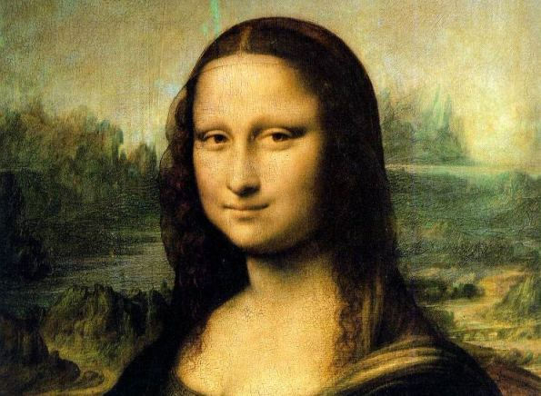

Color Averaging Image Areas
Paper.js allows you to find the average color of an area within a raster. This allows you to find the average color within a Rectangle, Point or PathItem over an image.
The following example fills a circle shaped path with the average color of the raster at the position of the mouse:
The following script colors the selected paths with the average color of the pixels of the selected raster that fall within the shapes of the paths.
